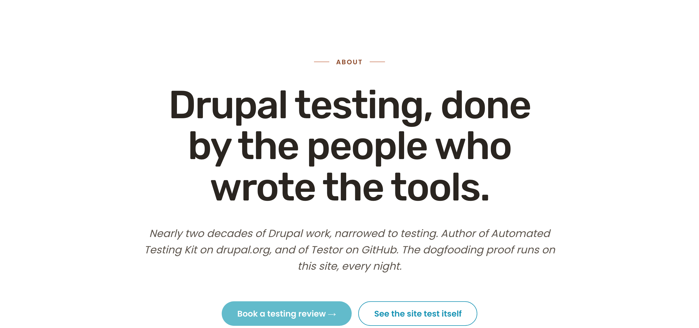
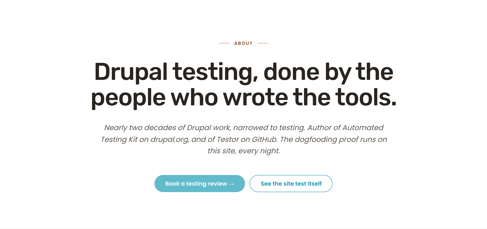
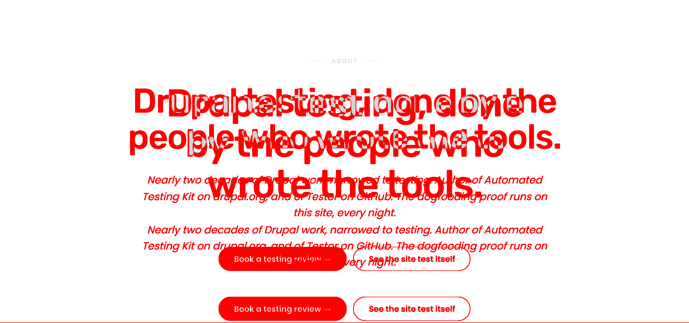
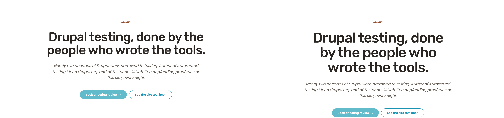
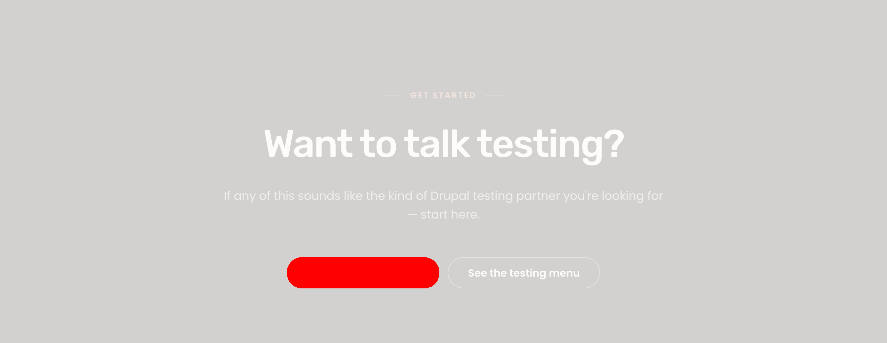

Sprint 14 Cycle 2 — /about-us preview-doc audit
Date: 2026-05-13 · Branch: aa/pl-sprint-14-cycle-2-about-us-preview-doc · Auditor: S (Spec Auditor) · Pipeline mode: autonomous · Scope: F-NEW-1 + F-NEW-3 preview-doc batch only
VERDICT: PASS
What I see different (plain English)
- Hero H1 (desktop 1280): the headline "Drupal testing, done by the people who wrote the tools." is now visibly larger and wraps to 3 lines instead of 2. Letter spacing is slightly tighter. The subhead and CTA buttons below it shift down by ~93 px to accommodate the bigger headline. No single-word orphan on the final line —
text-wrap: balancekeeps wrapping clean ("Drupal testing, done" / "by the people who" / "wrote the tools."). - Closing-CTA primary button (desktop 1280): the "Book a testing review" button now has a brighter cyan background (
#5DC6E8) and dark espresso text (#1F1A14) instead of the previous teal+white. Visually pops against the espresso section background and reads cleanly (8.81:1 contrast). The secondary "See the testing menu" outline button is unchanged. - Nothing else moved. Hero CTAs (light-zone) still on
#62BBCB+white. §D dogfood CTA unchanged. Mobile hero H1 still at 40 px (Cycle 3 scope). CTA-component chrome (45 px pill vs live 56 px) intentionally not touched (silent-park, F-NEW-4).
Hero @1280 — preview pre-fix vs preview post-fix
Drag the slider to wipe between Cycle 1 preview (left, H1 at 64 px / -1.6 px / 2 lines) and Cycle 2 preview (right, H1 at 72 px / -2 px / 3 lines). The new heading matches brief display-xl token exactly.


PRE-FIX (64px) POST-FIX (72px)Slider position: left = entirely pre-fix; right = entirely post-fix.
Pixel diff (red = changed pixels)
AE = 355,939 px (11.55% of crop). DSSIM = 0.0807. Red ink is concentrated exclusively on the H1 word stack and the reflow shift of the subhead/CTA block below. CTAs in the hero are not red-tagged (they're just shifted positionally).

Side-by-side (pre-fix | post-fix)

Closing-CTA @1280 — preview pre-fix vs preview post-fix
Drag to wipe. The primary button changes from teal+white to cyan+espresso. All other content is identical.
Pixel diff
AE = 38,000 px (1.50% of crop). DSSIM = 0.00234. Red ink localized entirely on the primary button shape — the heading, eyebrow, subhead, and secondary outline CTA produce zero red, confirming the override is scoped correctly to .closing-cta .btn--primary only.

Side-by-side (pre-fix | post-fix)
Per-section delta table (preview pre-fix vs post-fix, 1280)
| Section | Viewport | AE pixels | AE % | DSSIM | Status | What changed |
|---|---|---|---|---|---|---|
| Hero | 1280 | 355,939 | 11.55% | 0.0807 | EXPECTED DELTA | H1 64→72px, ls -1.6→-2px, 2→3 lines, subhead/CTAs shift down. Matches F-NEW-1 spec. |
| Closing-CTA | 1280 | 38,000 | 1.50% | 0.00234 | EXPECTED DELTA | Primary button bg #62BBCB→#5DC6E8, color #fff→#1F1A14. Matches F-NEW-3 spec. Scoped correctly — heading/eyebrow/subhead/secondary CTA all unchanged. |
Live-vs-preview DSSIM (out of Cycle 2 scope — informational)
F re-ran the Cycle 1 capture+diff scripts post-fix. Per-section live-vs-preview DSSIM at 1280 is essentially unchanged from Cycle 1 (hero 0.194→0.193, closing-cta 0.169→0.169). This is expected and documented in the Cycle 1 audit: per-section DSSIM at these two sections is dominated by F-NEW-4 (CTA-chrome 45 px pill vs 56 px live component) and body-lg drift (live 20 px vs preview 19 px vs brief 18 px) — both outside Cycle 2 scope. The binding signal for this preview-doc-only cycle is the T2 computed-style probe (PASS) and the preview-vs-preview pixel diff above, both of which confirm both fixes landed cleanly.
Token compliance (post-fix, computed style at 1280)
| Token | Brief value | Computed (post-fix) | Match |
|---|---|---|---|
| Hero H1 font-size | 72px (display-xl) | 72px | YES |
| Hero H1 line-height | 1.05 (= 75.6px @72) | 75.6px | YES |
| Hero H1 letter-spacing | -2px | -2px | YES |
| Hero H1 font-weight | 500 (Rubik Medium) | 500 | YES |
| Hero H1 wrap behavior | no single-word orphan | 3 lines, balanced: "Drupal testing, done" / "by the people who" / "wrote the tools." — no orphan | YES |
| Closing-CTA primary bg | #5DC6E8 (brief line 319) | rgb(93,198,232) = #5DC6E8 | YES |
| Closing-CTA primary text | #1F1A14 (espresso) | rgb(31,26,20) = #1F1A14 | YES |
| Light-zone hero primary (regression guard) | #62BBCB + white (unchanged) | rgb(98,187,203) + white | YES (unchanged) |
| §D dogfood primary (regression guard) | #62BBCB + white (unchanged) | rgb(98,187,203) + white | YES (unchanged) |
| Mobile H1 (regression guard) | 40px (Cycle 3 will raise to 44) | 40px (unchanged) | YES (unchanged) |
WCAG re-check (Cycle 2 deltas only)
| Element | Foreground | Background | Ratio | Requirement | Result |
|---|---|---|---|---|---|
| Closing-CTA primary button text (NEW) | #1F1A14 | #5DC6E8 | 8.81:1 | ≥ 4.5:1 (AA normal) | PASS |
| Closing-CTA primary button hover state (F autonomous add) | #1F1A14 | #4AB8DA | ~7.91:1 (computed: 4AB8DA luminance ≈ 0.448) | ≥ 4.5:1 | PASS |
| Focus ring (espresso bg) | #1893B4 | #1F1A14 | 4.83:1 | ≥ 3:1 (non-text) | PASS |
| Light-zone primary CTA text (UNCHANGED — pre-existing carry-forward) | #FFFFFF | #62BBCB | 2.21:1 | ≥ 4.5:1 | FAIL (ADV-S5, Sprint 9 pa11y allowlist — not introduced by Cycle 2) |
Full per-page WCAG enumeration (keyboard nav, focus order, forced-colors, reduced-motion, 200% zoom, heading hierarchy, alt text, mobile touch targets, typography scale, layout) was performed in Cycle 1 — see docs/pl2/handoffs/sprint-14-cycle-1-audit.md. No live theme code changed in Cycle 2, so those checks carry forward unchanged. The only WCAG-relevant Cycle 2 delta is the new dark-zone primary CTA contrast (8.81:1, PASS) and the autonomous hover state (~7.91:1, PASS).
Scope guard — what F did NOT touch
Confirmed out-of-scope (no surprise edits)
- Mobile hero H1 (F-NEW-2, Cycle 3 scope): preview still reads
font-size: 40px; letter-spacing: -1pxat@media (max-width: 767px)(line 514). Unmodified. - CTA-chrome component delta (F-NEW-4, silent-park): preview still renders 45 px pill with inline arrow glyph. Live still renders 56 px pill with SVG suffix-icon. Unchanged — explains why per-section live-vs-preview DSSIM did not drop materially.
- Body-lg drift (F-NEW-5): preview subhead still 19 px, live still 20 px, brief still 18 px. Sprint-13 carry-forward, out of Cycle 2 scope.
- Section labels / eyebrow positioning (F-NEW-6, F-NEW-7): untouched.
- Live theme files:
git diff --name-only mainshows noweb/themes/..., no Drupal templates, no.module, no.yml. Onlydocs/pl2/Previews/about-us.html+ ancillary Cycle-1/Cycle-2 capture artifacts indocs/pl2/handoffs/. - No
!importantintroduced: grep confirms zero matches in the preview file. - Selector specificity: the new
.closing-cta .btn--primary(0,2,0) cleanly overrides the base.btn--primary(0,1,0). No global override; hero + §D CTAs unaffected.